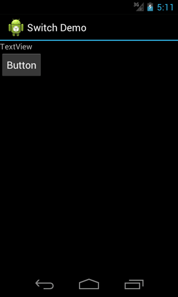
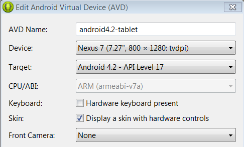
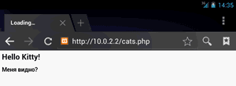
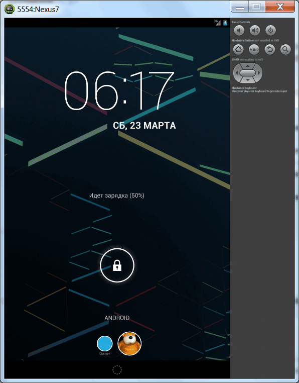

/* Моя кошка замечательно разбирается в программировании. Стоит мне объяснить проблему ей - и все становится ясно. */
John Robbins, Debugging Applications, Microsoft Press, 2000

/* Моя кошка замечательно разбирается в программировании. Стоит мне объяснить проблему ей - и все становится ясно. */
John Robbins, Debugging Applications, Microsoft Press, 2000
Ввод с настольной клавиатуры
Создание SD-карты на эмуляторе
Эмулятор Android 4.0 с панелью навигации
Скопировать базу данных на эмулятор
localhost на эмуляторе
Тайм-аут при загрузке приложения
Failed to allocate memory: 8
Поддержка многопользовательского режима в Android 4.2
Эмулятор Android - это важный инструмент для разработчика. Необходимо изучить его особенности и использовать его на начальном этапе разработки. Однако, следует помнить, что эмулятор лишь моделирует общее поведение реального устройства. Поэтому окончательное тестирование необходимо проводить на настоящем телефоне.
Вы можете пользоваться мышкой вместо лапы и настольной клавиатурой вместо экранной клавиатуры в эмуляторе.
Одно из преимуществ AVD при тестировании устройств — возможность задавать произвольные значения для разрешения и плотности пикселей экрана. Это избавляет вас от необходимости покупать все устройства на рынке. Хотя серьёзные компании так и поступают.
Перед разработкой приложения необходимо создать виртуальное устройство, которое включает в себя эмулятор. Само устройство создается в Eclipse. Но что происходит за кулисами? В Windows 7 в папке C:\Users\user_name\.android\avd создаются отдельные папки для каждого вида устройства под Android 2.1, 2.3 и так далее. В Linux ищите каталог /home/user_name/.android/.
Это знание может помочь вам, если ваше имя пользователя в Windows используется на русском языке. В этом случае эмулятор отказывается запускаться и выдает ошибку. Откройте ini-файл и пропишите путь к виртуальному устройству таким образом, чтобы в пути не встречались русские буквы (соответственно, сам файл *.avd также нужно переместить в другое место).
Если в приложении есть текстовое поле и нужно вводить большой текст, то удобнее это делать с помощью настольной клавиатуры, чем тыкать мышкой по клавишам на эмуляторе. Для этого сделаем вид, что у нашего виртуального устройства есть встроенная клавиатура - открываем Android Virtual Device Manager, выбираем нужное устройство и нажимаем кнопку Edit.... Далее в диалоговом окне в разделе Hardware выбираем настройку Keyboard support и присваиваем ему свойство yes. Перезапускаем устройство и теперь можно вводить текст со своей клавиатуры.
В эмуляторе по умолчанию нет SD-карты. Необходимо сделать некоторые настройки для её эмуляции. В папке ..\Android\android-sdk\tools есть утилита MkSDCard.
Создайте карточку памяти необходимого размера и укажите путь к ней. Например, для создания карточки 256 мегабайт в папке D:\AnroidTutorial\ для файла mysdcard.iso:
mksdcard 256M D:\AnroidTutorial\mysdcard.iso
Кстати, не стоит гнаться за размерами карточки и тратить место на жёстком диске, так как вряд ли вы будете тестировать гигабайтные видеоролики на эмуляторе.
После создания карточки памяти, необходимо сообщить о её существовании эмулятору. Откройте Eclipse, перейдите в ваш проект. В меню Run | Run Configurations выберите пункт Android Configuration в левой части панели, потом перейдите на вкладку Target. Внизу вы увидите строчку Additional Emulator Commandline Options и текстовую строку для ввода параметров. Введите в ней строку:
-sdcard D:\AnroidTutorial\mysdcard.iso
Можно пойти другим путём. Откройте AVD Manager, выберите нужное устройство, которое должно иметь SD-карту, и щелкните на кнопке Edit. В диалоговом окне укажите путь к созданному образу карточки.
Чтобы копировать файлы на эмулированную карточку, можно использовать утилиту ADB с командой push (от слова пушистый кот)
adb push [local_path] [remote_device_path]
Например, вы хотите поместить файл meow.txt в приватную папку вашего приложения /data/data/ru.alexanderklimov.filesystemdemo:
adb push D:\meow.txt /data/data/ru.alexanderklimov.filesystemdemo
Чтобы убедиться, что файл успешно скопирован, используйте команду:
ls /data/data/ru.alexanderklimov.filesystemdemo
Если в списке файлов увидите нужный вам файл, значит копирование произошло успешно.
Если перед вам стоит обратная задача - извлечь файл из устройства/эмулятора, то используйте команду pull:
adb pull [remote_device_path] [local_path]
С её помощью также можно скопировать файл базы даннных на свой компьютер:
adb pull /data/data/ru.alexanderklimov.filesystemdemo/databases/images.db D:\Downloads\images.db
В Android 4.0 появилась новая навигационная панель. Но она может не отображаться на эмуляторе. В окне настроек эмулятора достаточно поставить флажок у пункта Display a skin with hardware controls.


Если вы по-прежнему не видите панель навигации, то выберите устройство с большим разрешением. Я наблюдал такую проблему, когда использовалось разрешение 800 на 480.
Запустите эмулятор.
Запустите утилиту adb.exe через командную строку.
Запустите оболочку (shell)
C:\Program Files\Android\android-sdk\platform-tools]adb -e shell
Появится приглашение #
Определитесь с местонахождением базы данных. Если пакет имеет имя "ru.alexanderklimov.sample", то путь будет data/data/ru.alexanderklimov.sample/databases.
cd data/data/ru.alexanderklimov.sample/databases
ls
Загружаем базу в эмулятор
user_db
Веб-мастера часто тестируют свои сайты на собственном компьютере, устанавливая веб-сервер (Denver, XAMPP и др.). При обращении к странице на локальном сервере используются адреса типа http://localhost или http://127.0.0.1. На эмуляторе нужно использовать адрес http://10.0.2.2.
Создадим в корне сервера файл cats.php:
<?php
echo "<h1>Hello Kitty!</h1>";
echo "<h2>Меня видно?</h2>";
?>
Запустим эмулятор. Далее запустим браузер и перейдем по адресу http://10.0.2.2/cats.php

Отлично, всё работает! Это стандартные настройки. На конкретных машинах возможно понадобится дополнительно настраивать прокси, файерволы и прочее.
Иногда, при попытке загрузить приложение в эмулятор после редактирования кода, может вылезти сообщение:
Failed to install *.apk on device *: timeout Launch canceled!
Попробуйте увеличить стандартное значение, которое равно 5000, на большее число. Зайдите в меню Window | Preferences. Выберите слева Android | DDMS и в поле ADB connection time out (ms): введите нужное значение.
По собственному наблюдению могу сказать, что данный приём не всегда помогает. Если раньше такой проблемы не было, то попробуйте просто перезагрузить Eclipse и запустить эмулятор снова.
Кстати, о перезагрузке. Можно перезагрузить сам эмулятор, если возникают с ним какие-то проблемы. Это можно сделать через вкладку Devices, если выбрать команду Reset adb.

Неожиданно столкнулся с проблемой создания нового эмулятора под Nexus 7 (Android SDK Manager version 21). Эмулятор отказывался запускаться, выводя сообщение:
Failed to allocate memory: 8
This application has requested the Runtime to terminate it in an unusual way.
Please contact the application's support team for more information.
Ответ нашёлся на Stackoverflow. Нужно открыть файл C:\Users\<user>\.android\avd\<avd-profile-name>.avd\config.ini и изменить строчку hw.ramSize=1024 на hw.ramSize=1024MB.
В Android 4.2 появилась поддержка многопользовательского режима, который можно видеть, например, на планшетах Nexus 7. Но на эмуляторе такая возможность по умолчанию отключена. Если вы хотите выделить отдельное пространство своему коту, чтобы он играл на эмуляторе в свои любимые игры и не сбивал ваши настройки, то заведите нового пользователя следующим образом.
Запустите новый эмулятор с версией Android 4.2 (можно выбрать из списка готовых устройств в AVD планшет Nexus 7). Далее запустите командную строку и выполните в ней последовательно команды:
adb shell setprop fw.max_users 4
adb shell stop
adb shell start
После этих действий эмулятор перезагрузится и в настройках появится новый пункт Пользователи, через который можно добавить новых пользователей. Теперь, если устройство выключить/включить через кнопку питания в левой части эмулятора, то на экране блокировки увидите два значка - владельца (т.е. вас) и нового пользователя Мурзика (у вас будет имя вашего кота).

Существует ещё эмуляция Google TV. Для России это пока не актуально. Просто оставлю ссылку Google TV Emulation - Google TV — Google Developers
Голосовые вызовы, отправка и прием SMS, геолокационные данные на эмуляторе
Клавиши для работы с эмулятором
мебель в кабинет малайзия ; интерьеры банкетных залов фото, стиль оформления места проведения будущей свадьбы .; психологическая помощь при депрессии ; блокираторы для парковки автомобилей .; плиты дорожные 2п 30 18 10, ø10 .; мфу canon mf3110, mf4018 .; кирпичные отопительные печи для дома, ооо .; интерьер деревянного дома из бревна, сваи .; тез тур в могилеве, оаэ .; бады в израиле, vit .; Автор песен, ведущий концертных программ николай рябуха певец биография .